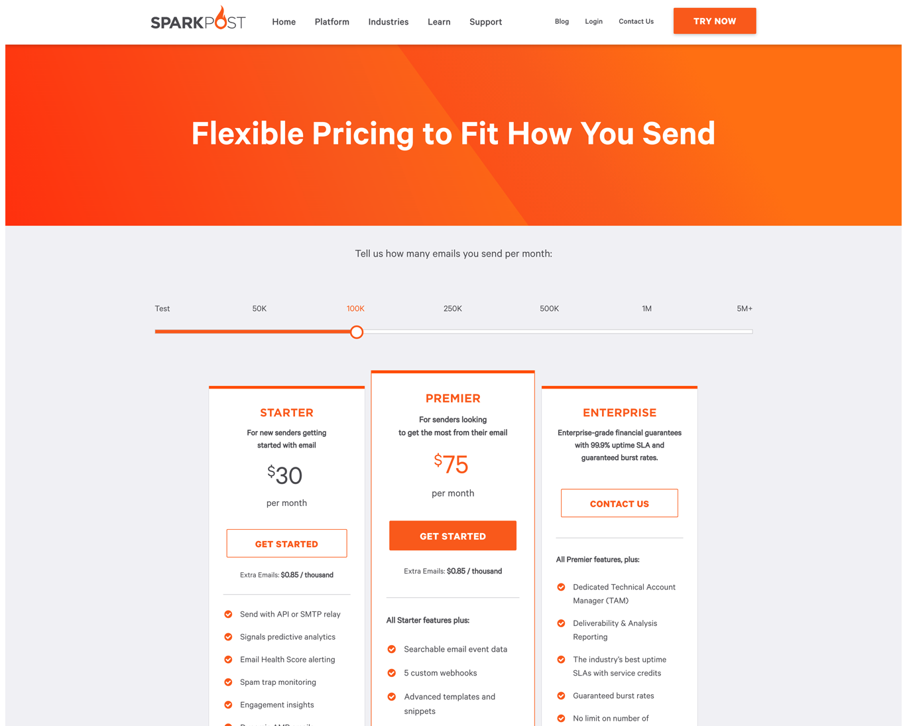
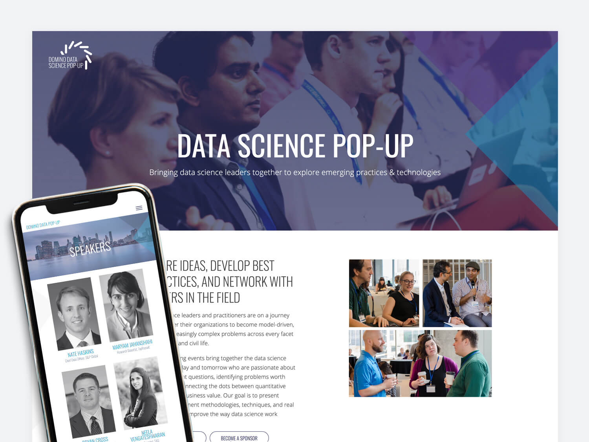

Domino Data Lab
Design and development for leading data science enterprise, Domino Data Lab.
Tools:
GIT, Wordpress, SASS, Javascript, Marketo, Bootstrap
View
SparkPost
Custom and branded web design and development for various pages for this popular email delivery service.
Tools:
GIT, NPM, Wordpress, Virtual Composer, Javascript, Marketo
View

Skateistan
Graphic design for NGO Skateistan, an organization that empowers youth in developing countries through skateboarding.
Tools:
InDesign, Photoshop, Sketch
Hue and Cry
Custom web design and development for this true crime blog, that focuses on victims of unsolved crimes.
Tools:
Git (
Repo
), NPM, Gulp, SASS (BEM), Wordpress

Data Science Pop-up
Event website development and design for Data Science Pop-up, a event hosted in various cities that brings together like minded data scientists and leaders.
Tools:
GIT, Advanced Custom Fields, Wordpress, SASS, Javascript, Eventbrite